Build something that lasts.
Civil engineering interests. Construction, the built environment, and the practical decisions that turn a plan into something real.
Texas A&M University · General Engineering
Howdy, I'm Max.
I like building things, figuring out why they don't work, and finding a way to make them better. Now I'm bringing that curiosity from the border to Aggieland.
Civil + Industrial Engineering Interests
Open to summer 2027 internships
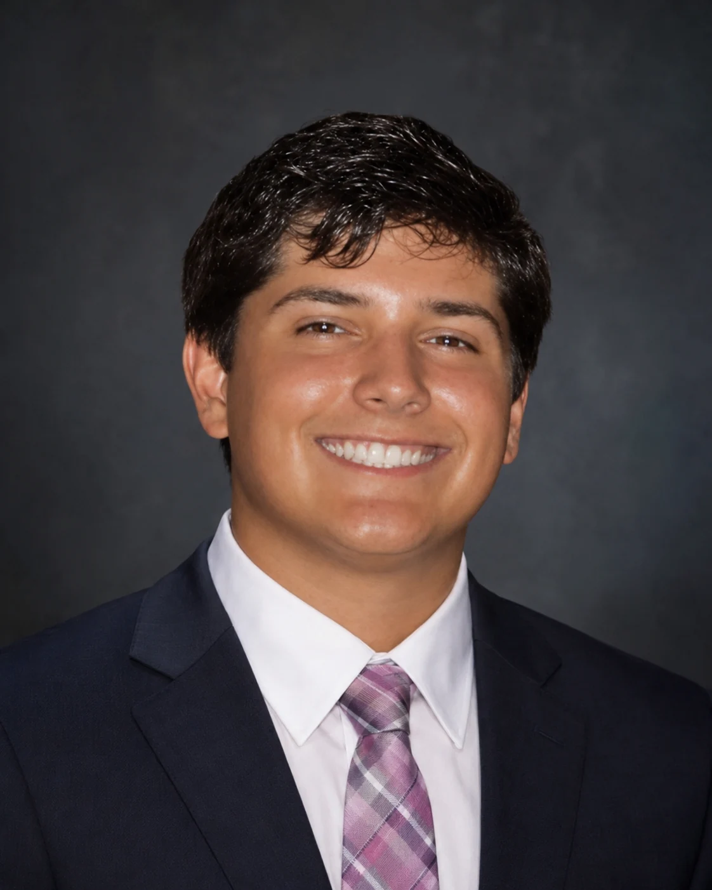
Three places. A story still being written.
Born and raised · My roots
Cross-border work & service
Here at 18 · Ready for what's next
01 / My story
I was born and raised in Del Rio, TX. At eighteen, I moved to College Station to attend Texas A&M.
Growing up on the Texas–Mexico border made English and Spanish part of everyday life. It also made me comfortable with different people, different perspectives, and a little uncertainty.
I'm a first-year General Engineering student exploring civil and industrial engineering. Civil speaks to the part of me that wants to build something I can point to. Industrial speaks to the part that keeps asking how the work could run better.
I want to learn from people who know their craft, take on useful work, and earn more responsibility as I go.
Civil engineering interests. Construction, the built environment, and the practical decisions that turn a plan into something real.
Industrial engineering interests. How people, materials, and processes fit together—and where a better approach can make a difference.
02 / Experience
Two workplaces gave me an early look at how things get built—and how they get where they need to go.
Project Management Intern
Del Rio, Texas
Supported oversight of construction project activities during a project management internship. The experience connected my interest in building things with the realities of a job site.
Construction brings people, materials, and timing together. It made me want to understand both the field work and the project management behind it.
Customs Brokerage Experience
Ciudad Acuña, Mexico
Worked in customs brokerage serving the Acuña–Del Rio region, with exposure to cross-border trade and distribution. Growing up on this border gave the work a personal connection.
The border is part of a much larger supply chain. This experience grew my interest in how goods move between businesses and across countries.
03 / Python & supply chains
Personal prototype · Synthetic data
My time at Agencia Aduanal in Acuña made me curious about the paperwork behind cross-border trade. This personal Python project follows shipment files through document review, entry preparation, and client handoff to find where work piles up.
I modeled 120 sample shipment files and compared 9 staffing and queue plans. Document review had the longest wait. Moving one person from entry preparation to review, then prioritizing shorter ready tasks, reduced average file turnaround by 40.0% in the simulation.
Personal project using invented shipment records. The figures describe this model, with no company performance data or government clearance times included.
# Compare the same files and 4 staff
baseline = simulate(shipments, (1, 2, 1), "fifo")
plans = [
simulate(shipments, staff, rule)
for staff in allocations(total=4)
for rule in ("fifo", "shortest", "due_date")
]
# Select the lowest mean turnaround
best = min(
plans,
key=lambda p: p["avg_turnaround_min"]
)
reduction = 100 * (
1 - best["avg_turnaround_min"]
/ baseline["avg_turnaround_min"]
)SIMULATED TURNAROUND REDUCTION
40.0%120 synthetic files · Same 4-person team
Each file joins a queue, waits for an available person, and moves through three steps. Python jumps to the next arrival or completion and records the wait at each step.
The original staffing split was 1 / 2 / 1 across review, entry preparation, and handoff. The selected plan uses 2 / 1 / 1 and serves shorter available tasks first. It moves capacity to the busiest step while keeping the team at four people.
The program tests three staffing splits against three queue rules: first in, first out; shortest task first; and earliest due date. It selects the lowest average turnaround among those nine plans.
| Metric | Baseline | Selected |
|---|---|---|
| Mean file turnaround | 56.0 min | 33.6 min |
| 90th percentile turnaround | 88 min | 43 min |
| Mean document-review wait | 27.48 min | 1.65 min |
| Within sample internal deadlines | 66.7% | 97.5% |
| Total staff | 4 | 4 |
Model assumptions: Staff can work at any of the three steps; processing times are known; each person handles one file at a time. The model excludes inspections, transport, rework, breaks, shift closures, and the cost of moving staff. The selected plan is the best of nine tested plans on this dataset. Testing real records, estimated task times, and deadline protection would be the next step.
Languages English and Spanish · bilingual
Technical development Python coursework, with a personal project exploring simulation, CSV data, and workflow analysis
Earlier activities High school robotics competition team and UIL mathematics team
04 / Competition
Golf taught me to prepare, stay composed, and take responsibility for the result. Sometimes you compete for the team. Sometimes the scorecard is entirely yours.
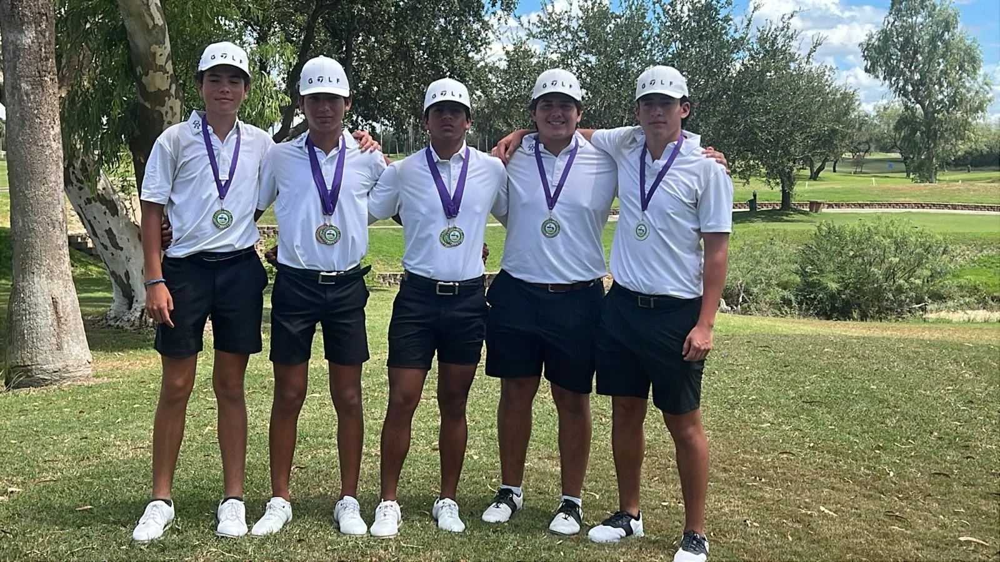
Del Rio High School · Varsity Golf
I played competitive high school golf and served as team captain in grades 10–12. I also entered individual tournaments through STPGA Junior Golf.
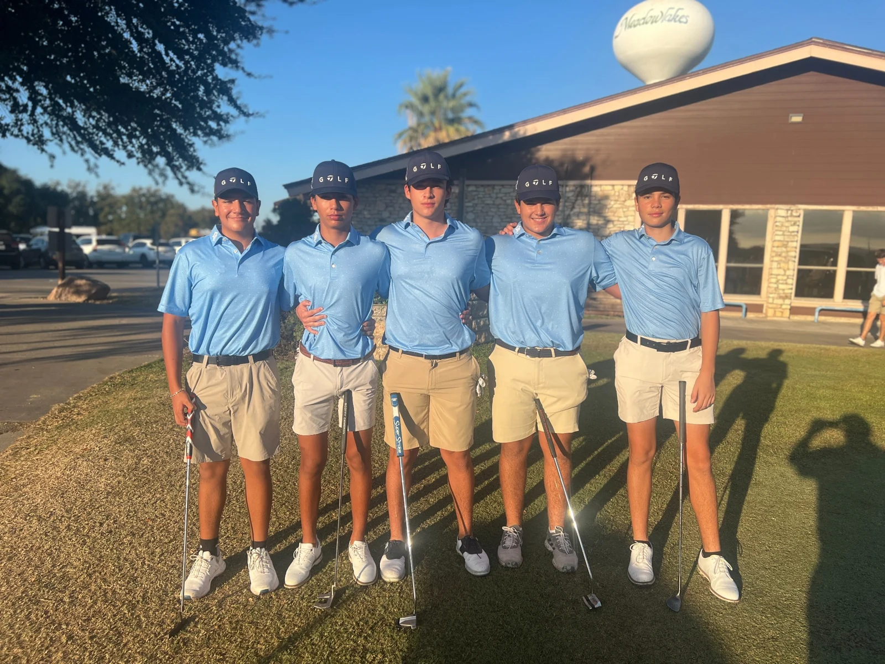
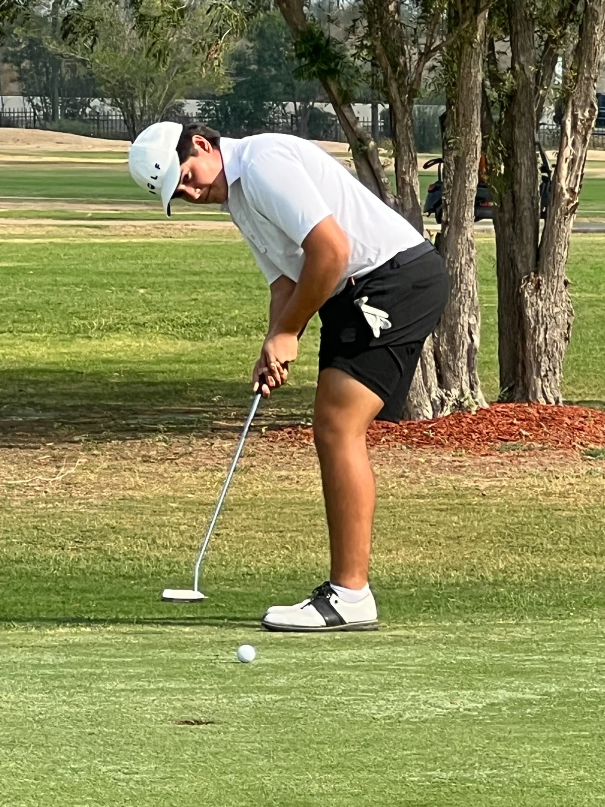
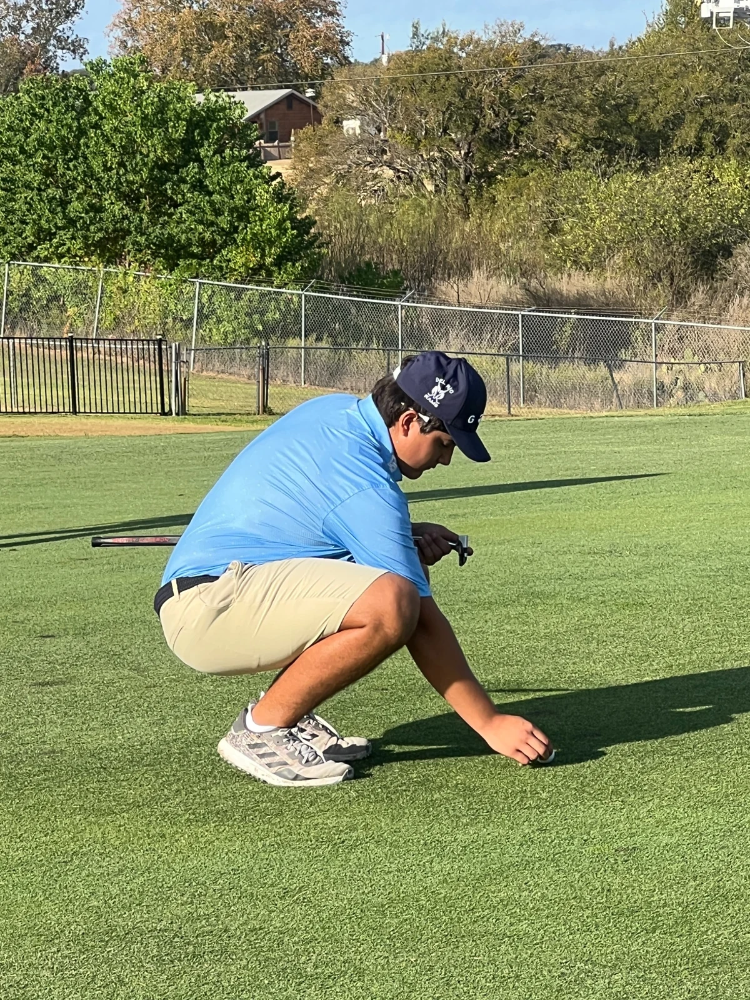
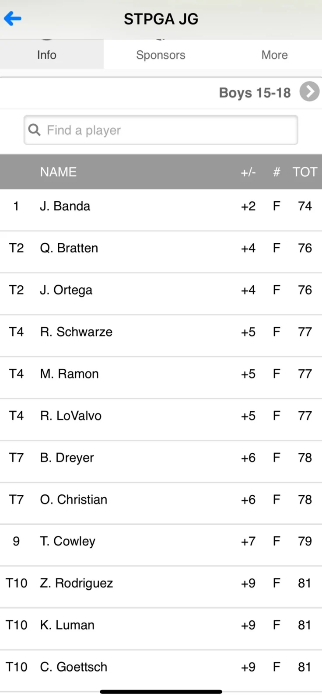
STPGA Junior Golf · Boys 15–18
One of my individual tournament results: 77 (+5), tied for fourth. The scorecard is a reminder that steady preparation can show up when it counts.
View the tournament resultI enjoy playing basketball, too. I like the pace, the competition, and how quickly a game brings people together.
05 / Beyond campus
Two trips through Europe. More than fifteen countries overall. Still plenty left to see.
I've visited Italy—including Rome and Pisa—France, Ireland, Scotland, and Vatican City, among other places. I enjoy seeing how different places look, how people live, and what I can learn by stepping outside what I know.
The landmarks are memorable. So are the friends, the meals, and the occasional cow.
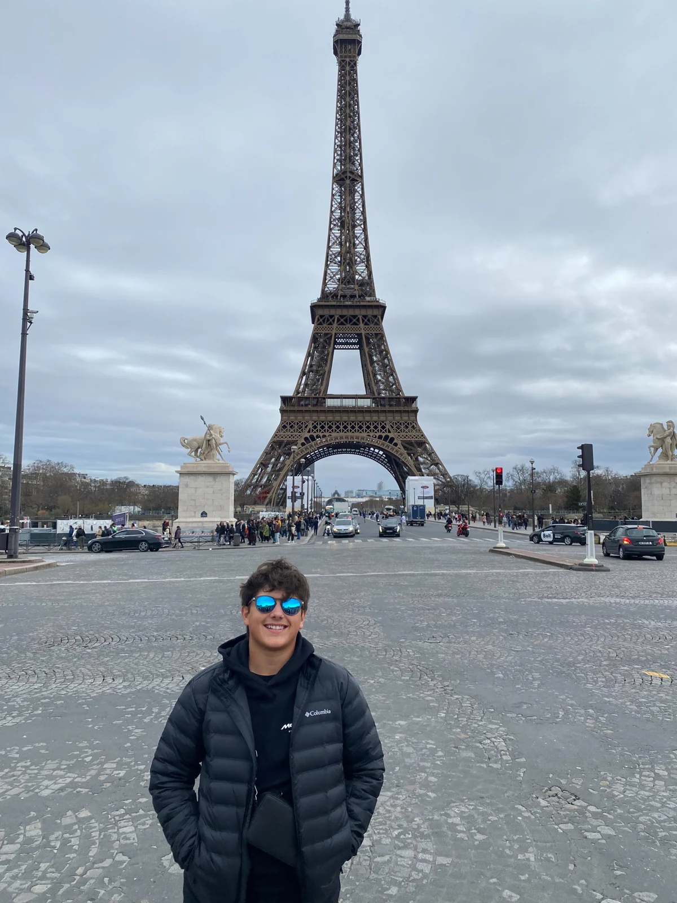
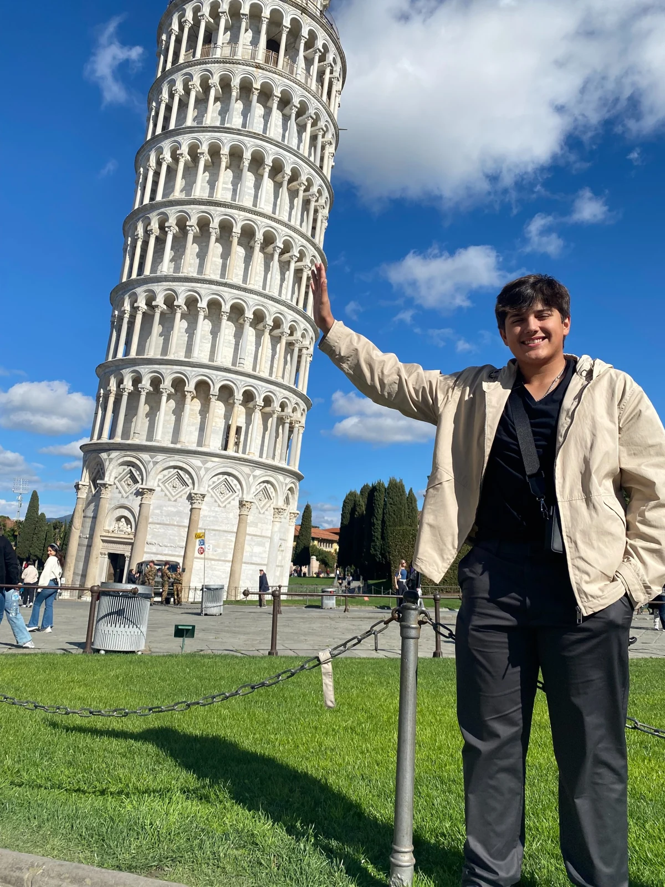
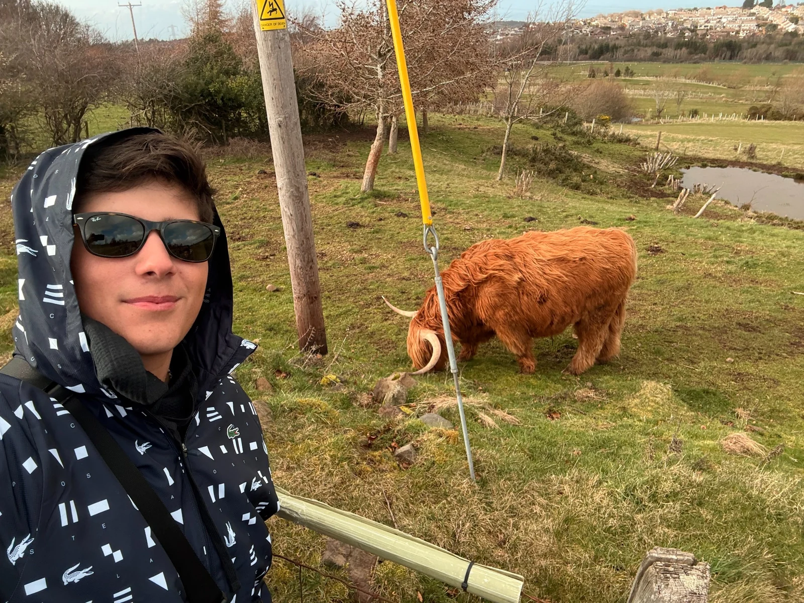
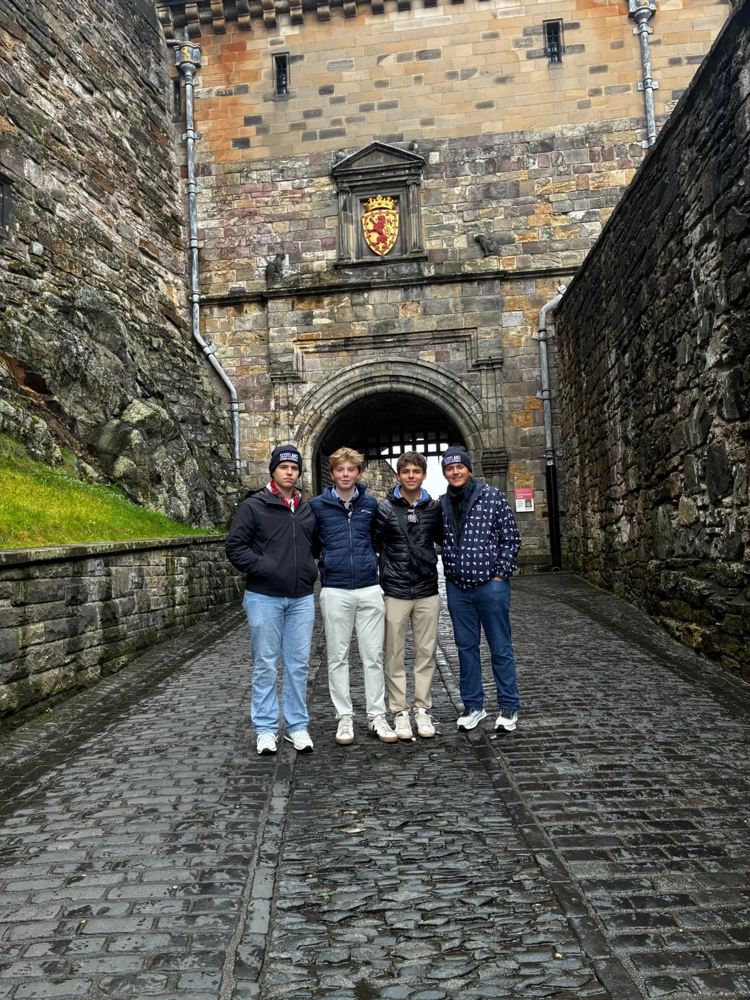
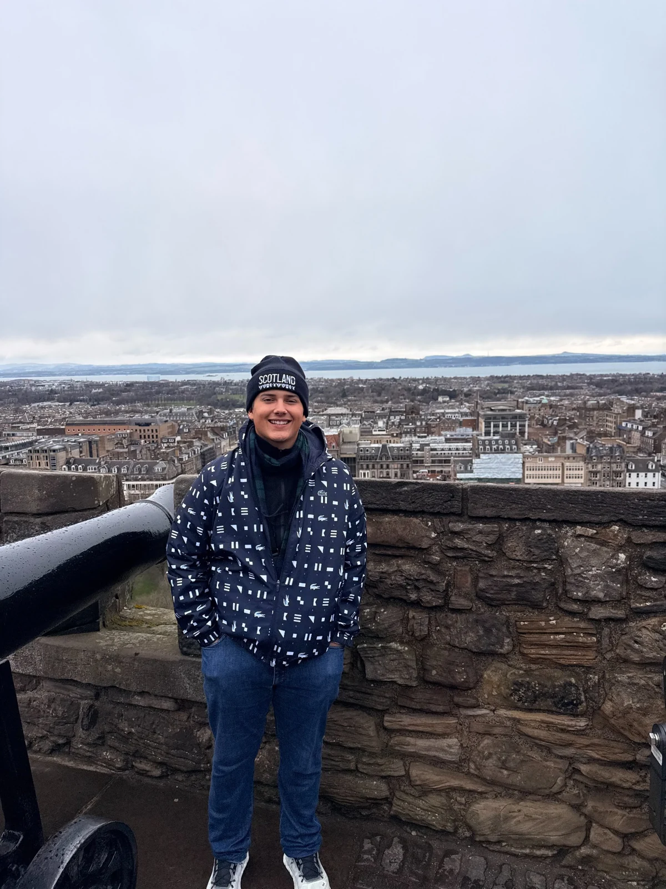
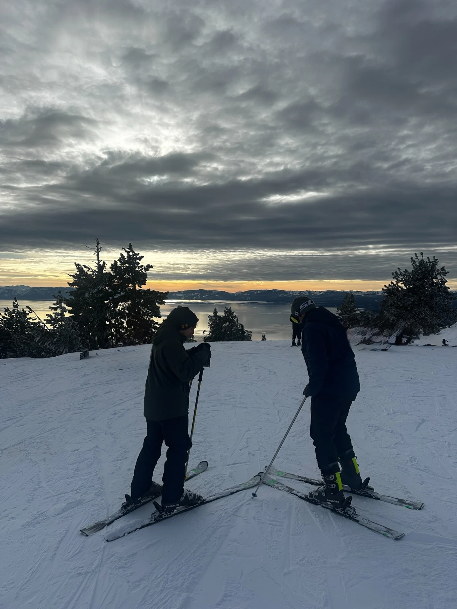
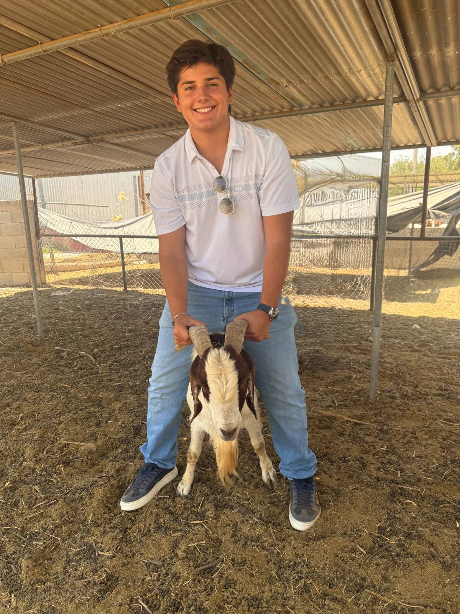
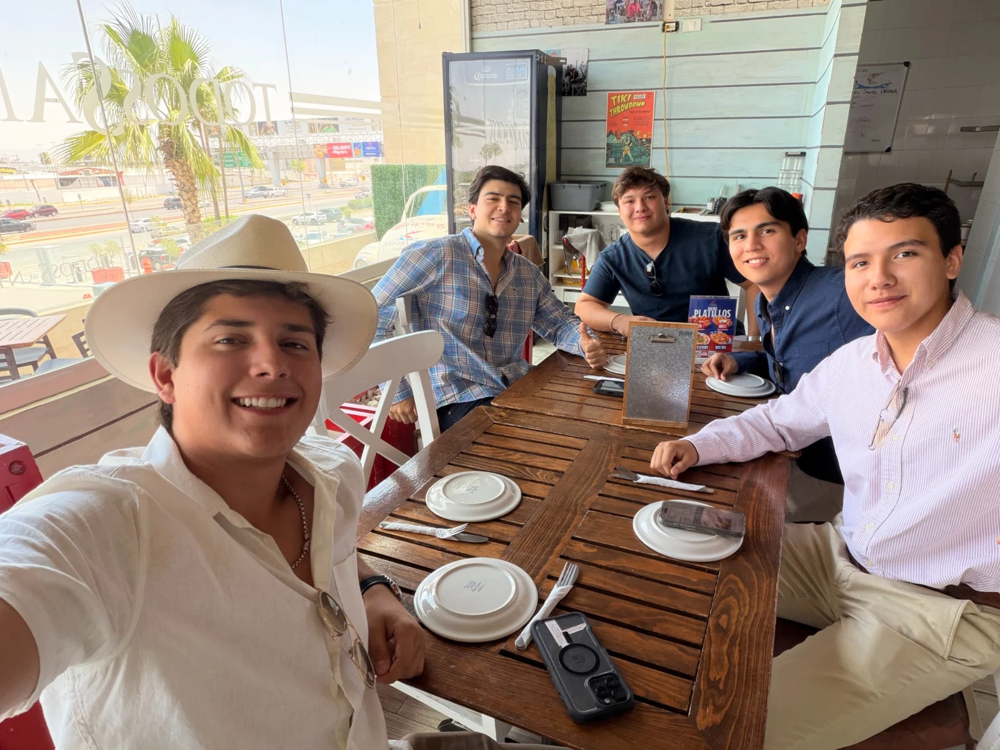
06 / Leadership & service
Senior year
Served as treasurer for Future Business Leaders of America at Del Rio High School.
Grades 10–12
Trained young athletes as a volunteer football coach in Ciudad Acuña.
Grades 9–12
Supported clothing and school-supply drives, collected food, and served meals to community members.
Getting involved at A&M